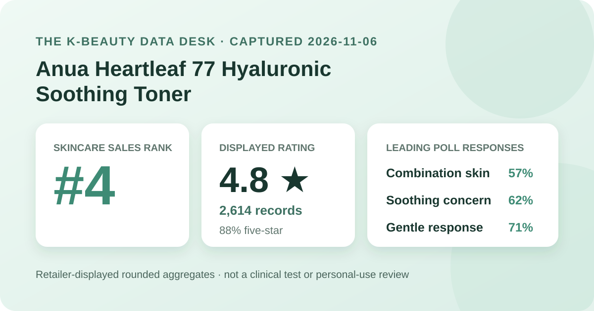
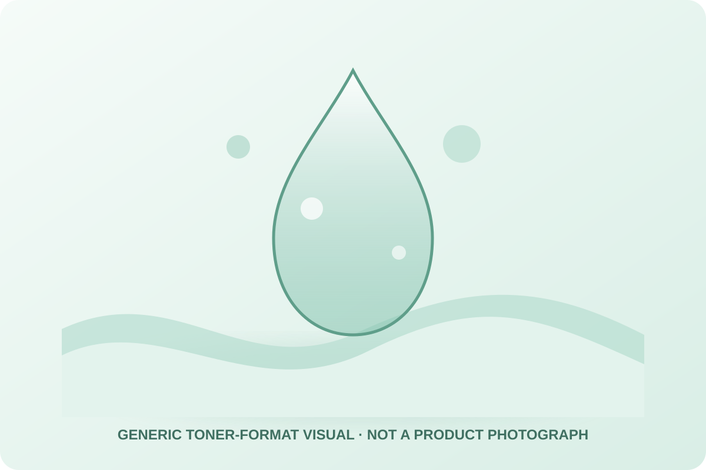

Data captured November 6, 2026. This analysis uses only the retailer's displayed product title, ranking position, aggregate rating, star distribution, and shopper polls. It does not copy or translate individual review text, reviewer names, or photos, and it makes no claim of firsthand use.

The short version: Anua Heartleaf 77 Hyaluronic Soothing Toner appeared at number 4 in the captured skincare sales ranking. Its product header and official detailed review view agreed on 4.8 out of 5 from 2,614 records. Five-star selections made up 88% of the displayed distribution; combination skin and soothing were the leading poll responses, while 71% selected the gentle response. These are retail signals, not proof of hydration, calming, barrier recovery, tolerance, or treatment of a skin condition.
The displayed average was 4.8 stars. Olive Young showed 2,614 review records in the product header, and its official detailed review statistics repeated the same score and total. That agreement matters because it prevents a headline number from one refresh being combined with a distribution from a different listing state.
The detailed view displayed these rounded star shares:
The rounded rows total 99%, so the missing point should be treated as display rounding rather than reassigned to any star level. The defensible descriptive reading is that high ratings dominate this retailer pool: 88% was shown at five stars and another 8% at four stars. That is a strong satisfaction signal for the listing, but not a controlled comparison or proof that one ingredient caused the scores.
A four-digit record base reduces the influence of any single rating, yet it can still combine different purchase dates, options, climates, routines, sensitivities, application amounts, and expectations. The average cannot show whether every participant reviewed the current 350 ml plus refill configuration or used the same regional formula.
The skin-type panel displayed 57% combination, 27% dry, and 16% oily. Those rounded shares total 100%. Combination respondents formed the largest group, while dry and oily respondents together still made up a substantial minority.
This is sample representation, not a compatibility score. The interface did not disclose the poll denominator, whether every reviewer answered, how people classified themselves, or what else was in their routines. A 57% combination share does not establish that the toner works best for combination skin, and the smaller oily share does not justify a warning against oily skin.
The concern panel showed 62% soothing, 37% moisture, and 1% wrinkle or brightening. These rounded rows total 100%. Soothing was clearly the leading response, but it remains a shopper-poll label rather than a redness, inflammation, or recovery measurement.
No standardized photography, erythema reading, corneometer result, transepidermal-water-loss measurement, dermatologist assessment, comparator, or defined treatment period was captured. The moisture label does not establish increased hydration, and the wrinkle or brightening label does not prove either outcome.
The irritation panel displayed 71% gentle, 26% ordinary, and 2% felt irritation. The rows total 99% after rounding. A clear majority selected the favorable label, but more than a quarter chose ordinary and a felt-irritation row was present. Reporting all three is more responsible than describing the toner as universally gentle.
The source did not provide a patch-test protocol, allergy screening, severity scale, duration, or medical evaluation. People with known allergies, active skin conditions, a damaged barrier, or a history of reactions should inspect the current regional ingredient list and seek appropriate professional guidance rather than rely on a crowd aggregate.

The retailer categorizes this item as a skin toner. That identifies a routine slot and a generally fluid format, but it does not verify the product's exact color, scent, viscosity, slip, drying time, residue, tack, layering behavior, or compatibility with sunscreen and makeup. I did not open, dispense, apply, soak cotton pads with, or layer the product.
The local illustration above deliberately avoids depicting the actual product or bottle. It provides only a generic cue for a lightweight liquid format. Real sensory behavior depends on formula, amount, application method, humidity, temperature, preceding cleansing, and later routine steps.
The retailer's official summary endpoint returned no usable positive/negative ratio or theme labels for this listing at capture time. I therefore do not infer recurring review topics from the individual review feed. Absence of a summary is not evidence that shoppers lacked common experiences; it only means the aggregate topic field was unavailable.
No individual review sentence, reviewer identity, or image is reproduced or translated here. Reading a few visible comments and manually turning them into a trend would create an undocumented convenience sample, so this article stays with the rating, star rows, and displayed poll distributions.
“Heartleaf 77” and “hyaluronic” are prominent listing language, but the captured aggregate interface did not establish a verified current ingredient list, regional formula, extraction method, molecular-weight profile, or ingredient concentration for this analysis. The product name cannot substitute for those details.
Likewise, a high average and a leading soothing poll response do not show that heartleaf reduced inflammation or that hyaluronic acid increased hydration. Those conclusions would require defined formulations, appropriate controls, measurements, and a clear time frame. Buyers who care about a specific ingredient should check the current package and official regional label.
Rank 4 describes one moment in Olive Young Korea's skincare sales list. It is not a quality rank and does not mean this was objectively the fourth-best skincare product. Promotion placement, discounting, stock, gifts, advertising, and recent demand can all affect the order.
The captured listing showed a 350 ml toner with a 350 ml refill pack, a ₩49,000 reference price, a ₩26,900 displayed promotional price, and temporary sold-out wording. These are dated context, not current buying advice. Confirm the selected option, total volume, stock, formula, coupon conditions, seller, returns, and checkout total on the live listing.
Anua Heartleaf 77 Hyaluronic Soothing Toner was the first valid unpublished product after three higher-ranked existing product families were skipped. The listing passed the consistency check: ranking and detail titles agreed, and both review surfaces showed 4.8 stars from 2,614 records.
The aggregate is favorable: 96 percentage points appeared in the four- and five-star rows, combination skin was the largest skin-type response, soothing led the concern panel, and gentle led the irritation panel. The responsible conclusion stops there. These figures support the product's relevance as a popular toner listing; they do not prove calming, hydration, barrier recovery, universal gentleness, or superiority over another formula.
Both captured review surfaces showed 4.8 out of 5 from 2,614 records, with 88% displayed at five stars.
Combination skin was the largest poll group at 57%, but that describes who answered and does not prove better performance for that skin type.
No. The 62% response is a shopper-poll label without an objective redness, inflammation, or recovery endpoint.
No. The displayed irritation panel also included 26% ordinary and 2% felt irritation, and no aggregate can predict an individual's tolerance.
No. This is a dated analysis of retailer-displayed aggregates. The generic liquid visual is not a product image or evidence of use.
Source: Olive Young Korea product page (captured November 6, 2026). The live listing, option, price, stock, rating, and review totals may change after capture.
← Back to all reviews · Review-volume ranking · Skin-poll representation · Methodology